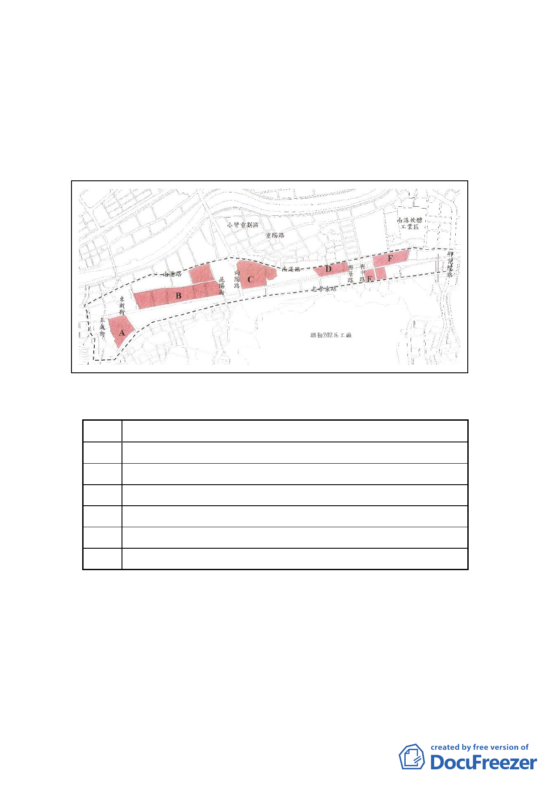

二、規劃範圍：南港區內鐵路地下化周邊地區，西起玉成街、東
至研究院路、南至忠孝東路、北至南港路。
計畫範圍：就上開規劃範圍內閒置或低度利用之公私有工業
區所在街廓為計畫範圍，共分為 6 區，面積約 37.42
公頃。
三、計畫區現況：
（一）基地現況：
編號
基地現況
A 臺電中心倉庫及玉成變電所用地及私有土地
B 臺鐵調車場、臺鐵回饋公園用地及國產實業、利百代等私地
C 臺電修護處、中華電信南港機房用地及私有土地
D 瓶蓋工廠（現無使用）、交通轉運站及私有土地
E 原為國小預定地，現況為鐵路地下化工程施作工地
F 僑泰興及聯華食品工業使用及私有土地
（二）土地權屬：公有 39％、私有 61％。
四、計畫內容：
（一）玉成街以東至向陽路區域（編號 A、B 基地），配合北側工
業區與南側住宅區使用，變更為住商混合區。
（二）向陽路以東至南港輪胎用地西側（編號 C 基地），變更為公
園用地，作為北部流行音樂中心發展腹地。
-8-